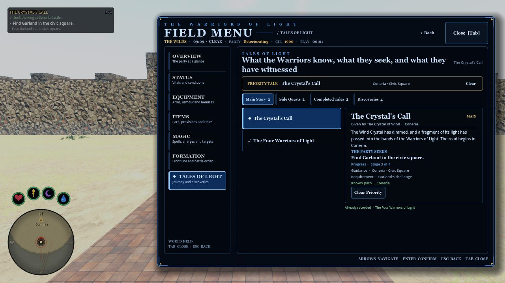
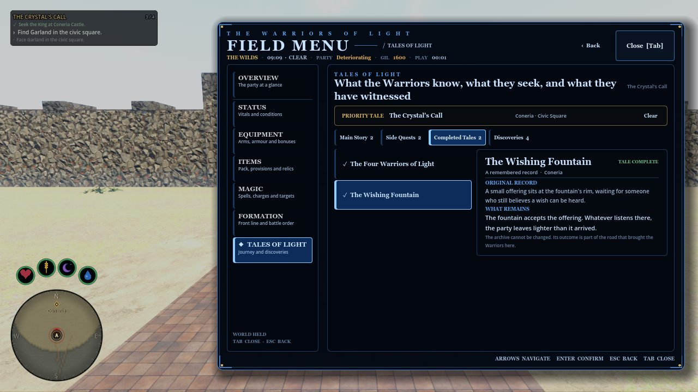
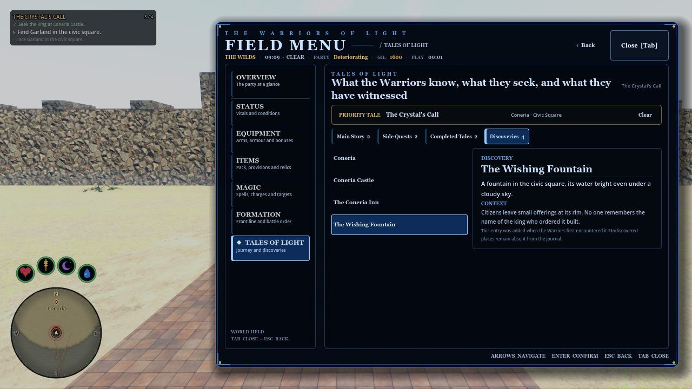

Main story
The spine of the game. One entry is flagged as the priority tale — the thread the party is currently following — and every other main entry sits behind it in a known order.
07 / 07 Tales of Light
Tales of Light is the remake's adventure journal — the record of what the Warriors of Light know, what they are seeking, and what they have witnessed. It replaces the original game's reliance on remembering what a villager said forty hours ago.
Final Fantasy I hides its structure in dialogue. A single line from a villager establishes the next objective; a broken bridge implies a ship; a crown implies a king. On a 256 × 256 tile world with a handful of screens, memory is enough.
At 4,000 × 4,000 metres it is not. Walking from Coneria to Melmond takes minutes, not seconds, and every resident can now say something contextual about weather, threat or their own mood. Without a record, the game's guidance dissolves into noise.
Tales of Light is therefore not a modern concession bolted onto an old game. It is the load-bearing structure that makes the new scale navigable while keeping the original's quest shape: the crystals, the four Warriors, and a world that tells you where to go next only if you listen.

07.1 Structure
The journal splits a tale's life into what is being pursued, what is optional, what is finished, and what has merely been heard about.
The spine of the game. One entry is flagged as the priority tale — the thread the party is currently following — and every other main entry sits behind it in a known order.
Optional threads discovered in the world. They appear only once the party has actually learned of them, and they never displace the priority tale's prominence.
Closed entries keep their completion note, so the journal accumulates as a record of what happened rather than collapsing into a checklist that empties as you play.
Places the party has learned about but not yet resolved — grouped by region and attributed to whoever provided the knowledge, so a rumour is visibly a rumour.
07.2 Anatomy of an entry
An entry is a small state machine with a readable surface. Nothing in the panel is decoration: each field is a value the game maintains.

The priority tale is shown as a separate card above the list, so opening the journal answers "what am I doing?" before it answers anything else.
07.3 In the field
A compact tracker sits in the corner of the screen so the objective is available without opening anything, and disappears when there is nothing to pursue.
The tracker shows the active tale's next step in one or two lines. It is deliberately quiet: no arrow, no distance counter, no marker floating over a building. The world is supposed to be read, not followed.
Discoveries resolve differently. Learning about a place does not add a quest — it adds knowledge, grouped by region, attributed to a speaker. A rumour overheard in a market reads as a rumour, and only becomes a tale once the party commits to it.
The dialogue shell reserves space for subtitles and voice lines. Neither exists yet; every line in the build is text.

07.4 Implementation
The journal is a view. The state lives in a single autoload, which is why a quest can never disagree with itself across two screens.
Owns quest stages, priorities and discoveries, alongside the party, equipment, inventory, magic charges and formation. It emits a change signal rather than letting screens poll.
The journal reads state directly and keeps no copy. Changing a stage anywhere is reflected everywhere on the next refresh, including the field tracker.
Quest progress travels in the same save as the party and the world clock, so continuing a journey restores the journal exactly as it was left.
| Suite | What it asserts | Result |
|---|---|---|
| Quest tracker | Tracker visibility, active tale resolution, refresh on quest change | Pass |
| Field menu | Sections, tab switching, entry selection, save and reload of journal state | Pass |
| Immersion | Social lines, schedule flags and caption routing alongside the journal | Pass |
07.5 Role
Three consequences, all of them structural rather than cosmetic.